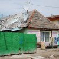

E scumpă benzina!
Unii români au antene parabolice performante, montate pe cocioabe de paiantă ce stau să se dărâme. Alţii au ultimul model de iPhone de pe care dau bip-uri pentru ca să nu-şi consume creditul de pe cartelă. Avem concetăţeni care îşi parchează Ferrari-ul roşu-aprins în faţa blocului din Ferentari în care locuiesc. Şi vecini care îşi dotează Rolls-Royce-ul cu instalaţie GPL ca să mai reducă din cheltuielile pentru benzină. Nostalgicii securităţii investesc în supravegherea video a blocurilor de pe care cade tencuiala, probabil pentru a imortaliza momentele când plouă cu moloz.
Deoarece poporul nostru se pricepe de minune să pună carul înaintea boilor, avem o capitală dotată cu cel mai mare mall din sud-estul Europei, dar care se blochează la primul semn de precipitaţii.
Bucureştiul se bucură de un stadion ultimul răcnet, capabil să găzduiască o finală de Europa League, dar maidanezii sunt strânşi şi ascunşi în preziua meciului. Asta după ce inaugurarea s-a făcut înainte ca gazonul să prindă rădăcini, iar la parcarea de 1250 de locuri încă se lucrează.
Primăria a montat ceasuri aurite în parcuri, dar a uitat să astupe craterele care se transformă în lacuri de acumulare ori de câte ori plouă.
Administraţia locală modernizează reţeaua de monitorizare a calităţii aerului în timp ce dă autorizaţii de construcţie pe bandă rulantă.
Munca sub reflectoare
Fidel îndemnului politic “vorbe, nu fapte“, de cum se înrăutăţeşte vremea, primarul general Sorin Oprescu apare la televizor. Cu un aer de gospodar mucalit, el îşi suflecă mânecile, îşi adună oamenii, pune de-o şedinţă în direct şi … dă din gură. Ne povesteşte ce s-a făcut, ce se face şi, mai ales, ce o să se facă. Îi beşteleşte pe reprezentaţii firmelor din subordine, îi pune la punct pe consilieri şi le impresionează pe tinerele jurnaliste.
Heirup-ismele mediatizate nu rămân, totuşi, fără ecou. Însufleţiţi de îndemnurile birjăreşti ale edilului, angajaţii de la salubritate pun mâna vitejeşte pe mături şi lopeţi pentru a se avânta în lupta cu noroaiele. Dacă le permite bugetul să cumpere motorină pentru cisterne, atunci chiar că or să termine de secat bălţile din stradă până dă prima zăpadă. Cu acelaşi entuziasm de moment, constructorii toarnă asfalt în mocirlă, umplu gropile cu pietriş tasat cu bocancul şi se roagă ca peticele să ţină până după 10 iunie, când se schimbă mandatul aleşilor. Atunci, totul se resetează.
Până una-alta, bucureştenii înoată pe micile străduţe, vâslesc pe marile artere, se scaldă la metrou şi în Pasajul Universităţii. Dar se umflă în pene că vieţuiesc într-o capitală europeană.
Bucureştiul lacustru e emblematic pentru modul în care românii îşi organizează priorităţile. În ţara în care totul e de-a-ndoaselea, până şi mândria vine înaintea motivelor ei.


{kind=link}
{kind=link}
{kind=link}
Stadionul bine ca l-au facut totusi. N-o fi avand parcare, or fi caini, dar macar au construit ceva cat de cat.
Comments on this entry are closed.